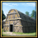
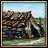

建筑（Buildings）象征着一个省份的基础建设与发展，把金币投资在建筑上将可以在几百年间获得稳定的回报。
建筑槽位
新建建筑需要有空余的建筑槽位，部分建筑可随着科技提升。升级建筑无需额外的建筑槽位，而是使用原有建筑的槽位。
由于  贸易中心默认占用2个建筑槽位，因此贸易中心省份最多能拥有10个建筑槽位，而非贸易中心省份则最多能拥有12个建筑槽位[1]。
每个省份的可用建筑槽位取决于地形和省份发展度[2]：
贸易中心默认占用2个建筑槽位，因此贸易中心省份最多能拥有10个建筑槽位，而非贸易中心省份则最多能拥有12个建筑槽位[1]。
每个省份的可用建筑槽位取决于地形和省份发展度[2]：
[math]\displaystyle{ \text{建筑数量} = 2 + \text{建筑槽位修正} + \lfloor 0.1\cdot \text{发展度} \rfloor }[/math]
| 条件 | |
|---|---|
| +2 | 基础 |
| +1 | 省份地形是农田、旱地或草原 |
| +1 | 省份拥有一座 政府类型建筑 |
| +1 | 省份拥有一所 大学 |
| +1 | 省份拥有一所 州议会 |
| +1 | 同区域拥有3级贸易中心的省份 |
| +1 | 省份每有10点 |
| +1 | 省份每扩建一次基础设施 |
| +1 | 工业化思潮的诞生地 |
| −1 | 省份是 极地气候 |
注：大学可以认为不占有建筑槽位。如果省份没有可用建筑槽位，大学会占据它将要提供的建筑槽位（1.15版本之前玩家需要拆除一个建筑为大学腾出位置，大学建造完再重新建造原有建筑）。
例子：如果“巴黎”是  法兰西的城市，拥有温带气候和农田地形，没有来自建筑的修正，并且省份
法兰西的城市，拥有温带气候和农田地形，没有来自建筑的修正，并且省份  发展度为32点，那么：
发展度为32点，那么：
[math]\displaystyle{ \text{建筑数量} = 2\, +\, 0\, +\, 1\, +\, 0\, +\, \lfloor 0.1\cdot 32 \rfloor = 6 \text{ 个建筑} }[/math]
建筑分类
建筑要在省份使用  金币进行建造。建筑总共分为三大类：
金币进行建造。建筑总共分为三大类：
常规建筑
这些是适用于你所有省份的通用建筑，分为七类：行政建筑、陆军建筑、海军建筑、生产建筑、贸易建筑、堡垒和税收建筑。
这其中每类都包含数个建筑，绝大多数建筑都可以升级到更好的建筑，但也有一些建筑（比如大学）会占据一个建筑槽位但无法升级到更高等级。你不需要在建造高等级建筑之前先建好低等级建筑；如果你这样做了，你只需要支付两者差价来升级建筑。
工厂
工厂是工业革命早期的工业生产建筑，他们独特之处在于可以增加省份贸易商品产出，例如武器厂只能在生产铜矿或铁矿的省份建造。各种工厂的具体信息请参见工厂列表。工厂的作用相同，区别在于解锁建造所需的科技等级和类别不同。然而没有生产黄金省份专属的工厂。在生产煤矿的省份上建造的熔炉将增加所有贸易商品的产量。
土著建筑
美洲土著国家在拥有土著议会政体时只能建造独有的土著建筑。所有建筑都没有科技要求，并且提供的效果也不同于普通建筑。土著国家改革政府，或者省份被割让给非土著国家时，这些建筑会立刻消失。
花费
所有建筑都需要花费  时间和
时间和  金币来建造。如果是升级原有建筑到更高级别建筑，建造花费会相应减少，但时间并不会减少。
金币来建造。如果是升级原有建筑到更高级别建筑，建造花费会相应减少，但时间并不会减少。
除了下述建筑花费修正外，特定省份也可能有只适用于本省份建造的修正，比如生产 铁矿 ( −20% 当地建筑时间) 或者 热带木材 ( −20% 当地建筑花费)。
以下是建造所需金币花费的修正：
| 条件 | |
|---|---|
| −20% | 开启 土著行政理念“移民传统” |
| −15% | 当 雅各宾派 在 |
| −15% | 当 |
| −10% | 当 全能者基督是国家圣像时 ( |
| −10% | 当 |
| −10% | 当 斯洛特拉作为君主的守护神（ |
| −10% | 当 内阁大学士派系在 |
| −10% | 当 行会派系在 |
| −10% | 当君主拥有 |
| −2.5-10% | 忠诚的 |
| −5% | 当帝国改革“要求改革”通过后 （ |
| −5% | 当 |
| −5% | 当文艺复兴思潮被接纳后 |
| +1% | 每百分之一 |
| +10% | 当君主拥有 |
理念和政策：
| 传统 | 理念 | 奖励/野心 | 政策 | |
|---|---|---|---|---|
| -15% |
|
|
— |
|
| -10% |
|
|
|
— |
| -5% | — |
|
— | — |
决议和事件：
| 事件修正 | 触发条件 | ||
|---|---|---|---|
| −20% | 特兰西瓦尼亚的黄金时代 | 持续15年 | |
| −20% | 公爵的建设项目 |
|
持续10年 |
| −10% | 伊丽莎白·威尔布拉汉 |
|
持续20年 |
| −10% | 汉萨经济改革 |
|
持续到统治者下台 |
| −10% | 米马尔·希南 |
|
持续到统治者下台 |
| −10% | 创造 | 持续到统治者下台 | |
| −5% | 建筑工资 |
|
持续3年 |
| +10% | 发行货币 | 革命灾难事件：“濒临破产”
|
持续到灾难结束 |
| +20% | 柏林人民不满停息 |
|
持续到统治者下台 |
常规建筑
建筑
所有常规建筑的基础建设  时间是12个月，并在建成后提供各种好处。
时间是12个月，并在建成后提供各种好处。
| 分类 | 科技 | 常规建筑（科技需求） | ||||
|---|---|---|---|---|---|---|
| 行政 | 法院（8）
|
市政厅（22） 升级自法院
|
|
|||
| 生产 | 工场（6）
|
会计室（24） 升级自工场
|
||||
| 税收 | 寺庙（4）
|
圣殿（19） 升级自大教堂
|
||||
| 海军 | 造船厂（8）
|
大船厂（24） 升级自造船厂 |
码头（6）
|
干船坞（19） 升级自码头
| ||
| 贸易 | 集市（4）
|
贸易仓库[3]（17） 升级自集市
|
证券交易所（22） 升级自贸易仓库
|
|||
| 沿海 |
|
升级自岸防工事
|
||||
| 陆军 | 兵营（6）
|
训练营（16） 升级自兵营
|
军营（8）
|
征召中心（22） 升级自军营
| ||
要塞
- 主条目：陆战#要塞
防御类型建筑（要塞）的基础建造 时间是30个月。要塞能抵御敌人的占领、在战争时期阻挠邻近省份的敌军行动，重新占领相邻的非要塞省份, 迫使敌人围攻要塞省份并减少本省份和陆地相邻省份的荒废度。
时间是30个月。要塞能抵御敌人的占领、在战争时期阻挠邻近省份的敌军行动，重新占领相邻的非要塞省份, 迫使敌人围攻要塞省份并减少本省份和陆地相邻省份的荒废度。
要塞需要每个月持续的维护。 要塞维护费随着要塞等级提升。建议在和平时期废弃要塞来减少-50%的
要塞维护费随着要塞等级提升。建议在和平时期废弃要塞来减少-50%的 要塞维护费。（可以对每一个要塞单独调整）。
要塞维护费。（可以对每一个要塞单独调整）。
| 类型 | 科技 | 建筑名称 (科技等级需求) | |||
|---|---|---|---|---|---|
| 防御 | 城堡（1）
|
棱堡（14） 升级自城堡
|
星堡（19） 升级自棱堡
|
要塞（24） 升级自星堡
| |
工厂
所有工厂花费  500金币，基础建设
500金币，基础建设  时间是60个月，工厂只能在拥有相关商品产出的省份建造。
时间是60个月，工厂只能在拥有相关商品产出的省份建造。
原住民建筑列表
所有的原住民政体建筑的基础建设时间为  12个月，在完成改革政府体制后将失去所有的原住民建筑。
12个月，在完成改革政府体制后将失去所有的原住民建筑。
原住民常规建筑
除灌溉与护栏需要花费 200 金币外，其余原住民常规建筑花费均为 100
金币外，其余原住民常规建筑花费均为 100 金币。
金币。
| 建筑 | 效果 |
|---|---|
| |
| +0.01 部落发展度增长 | |

长屋 Longhouse |
|
|
原住民唯一建筑
所有原住民唯一建筑花费均为 200 金币，且每个国家的每一种唯一建筑仅能建造一次。
金币，且每个国家的每一种唯一建筑仅能建造一次。
| 建筑 | 效果 |
|---|---|
| |

汗屋 Sweat Lodge |
建筑策略
建筑策略
你该熟记于心的有关于资建建筑物的经验法则。
- 只有在更重要的领域不需要钱时，才可用闲钱投资建筑物。
- 应注意建筑在该省产生利润所需的时间。有些省份可能太穷，以至于所建建筑不可能在剩余时间内带来太多收益。
- 当你考虑大规模铺建筑时，建议点选
 经济理念组，并将其与政策相结合，以缩减建筑成本。
经济理念组，并将其与政策相结合，以缩减建筑成本。 - 值得注意的一点是，除了
 本地自治度，省份的收入也会受到
本地自治度，省份的收入也会受到  文化和宗教的影响。
文化和宗教的影响。 - 每个省份的空间是有限的，你可以选择增加本地发展度或升级贸易节点以增加可用槽位。
建筑顺位
建筑的定位可以对投资的回报造成大额的影响。因此建议在适宜的省份以下建筑：
- 绝大多数建筑提供基于百分比的奖励，这意味着在高
 发展度且拥有低 本地自治度的省份建造建筑会取得更高的收益。贸易类建筑更适合建造在高
发展度且拥有低 本地自治度的省份建造建筑会取得更高的收益。贸易类建筑更适合建造在高  本地贸易力量的省份上。
本地贸易力量的省份上。 - 提供均一奖励的建筑物最好建在自治领地省份，因为它们不会受到高自治度的影响（仅限堡垒[5]），或者是在低发展度直属州省份（可以是堡垒、军营、船厂类）。
- 特定的阶层对总发展度不利，但是可以把建筑和阶层相结合，以更好地提高某一类发展度。这些阶级不光可以无视本地某些方面的自治度，而且在它们忠诚时可以提供更多奖励：举个例子，
 商人阶层和
商人阶层和 齐米阶层分别促进贸易和税收。
齐米阶层分别促进贸易和税收。 - 工厂增加
 本地商品产出，这样不但增加本地 贸易额，也增加生产收入。将它与生产类建筑结合可以得到更多的生产收入。
本地商品产出，这样不但增加本地 贸易额，也增加生产收入。将它与生产类建筑结合可以得到更多的生产收入。 - 工厂不受本地自治度、宗教和文化的影响，因此它们甚至可以建在高自治的省份。或许你不能从生产中获得最大化收益，但是依旧可以从 贸易收入中获益。
- 对于堡垒，应当优先建在低
 补给上限、拥有高
补给上限、拥有高  要塞防御、高
要塞防御、高  敌军损耗，以及对攻击方有地形惩罚的省份（例如山脉、丛林、高地等等）。最好建在边境省份，在不需要时荒废它们。
敌军损耗，以及对攻击方有地形惩罚的省份（例如山脉、丛林、高地等等）。最好建在边境省份，在不需要时荒废它们。
规避事项
建筑是需要花钱的，所以要考虑他们的成本收益率。因此，你需要知道何时不该投资于某种建筑：
- 如果你已经在一个贸易节点中占据了绝对优势，那么就不必在此建造贸易建筑。
- 如果你的国家已经拥有庞大的军事力量，并且没有国家能与你匹敌，那么陆军/海军建筑往往可以不必建造。
- 由于堡垒有高额的初始建造费用与
 维护费用，所以在远离边境的内陆省份最好别造这些建筑。不过假如某个地区快出叛军了，一些低等级的堡垒可能有助于阻挡叛军。
维护费用，所以在远离边境的内陆省份最好别造这些建筑。不过假如某个地区快出叛军了，一些低等级的堡垒可能有助于阻挡叛军。 - 如果你正在玩土著部落国家，并且计划迁徙，那么除非威胁生存的紧急情况，造建筑是一种浪费，因为迁徙之后建筑会被摧毁。
贷款造建筑值得吗？
借贷来造建筑划得来吗？或者说，如果你背负着一笔贷款，应该优先偿还，还是先造建筑？ 就像在现实生活中，理论上，如果建筑物每年提供的收入除以建筑成本和建筑利息的总和，高于每年的利息，答案是肯定的。这往往出现在一个高发展度的省份建设或者是在一个生产力发达、出产昂贵货物的省份中建造工厂的情况中。当然，玩家也要考虑到他们是否在通货膨胀失控之前付清贷款。安全的策略是，衡量你在建造建筑之前的收入能否在建设完毕后及时付清你的贷款。
何时才能回本？
收入的增长受本省和国家在税收、生产效率以及省份发展度等因素的动态影响。随着技术的进步，国家的收入必然会增加。因此，在早期游戏中，建筑能否回本往往不是问题。问题在于，多久能够回本，以及把钱花在别的地方是否会更好。下表列出了在建筑物盈亏平衡之前的若干年内月度收入（在建筑界面中显示的数值）所需的增加。
| 建筑 | |||||
|---|---|---|---|---|---|
| 基础价格 | 100 |
200 |
300 |
400 |
500 |
| 建成后几年收回成本 | 对月收入提升数值的要求 | ||||
| 5 | 1.67 | 3.33 | 5.00 | 6.67 | 8.33 |
| 10 | 0.83 | 1.67 | 2.50 | 3.33 | 4.17 |
| 20 | 0.42 | 0.83 | 1.12 | 1.67 | 2.08 |
| 50 | 0.17 | 0.33 | 0.50 | 0.67 | 0.83 |
| 100 | 0.08 | 0.17 | 0.25 | 0.33 | 0.42 |
工厂的好处有两个方面：一个是通过本地生产，另一个是通过贸易收入。贸易收入受多种因素的影响：商品价格、贸易公司加成、玩家在贸易节点中收取的贸易份额、以及是否有转移的加成（如果在下游贸易中心收集）。假设没有贸易公司，并且占有100%的贸易份额，以下是在特定年限内回本所要求的面板数值。
| 商品价格 | 5.0 |
4.0 |
3.5 |
3.0 |
2.5 |
2.0 |
|---|---|---|---|---|---|---|
| 建成后几年收回成本 | 对面板收入提升数值的要求 | |||||
| 5 | 7.92 | 8.00 | 8.04 | 8.08 | 8.13 | 8.17 |
| 10 | 3.75 | 3.83 | 3.88 | 3.92 | 3.96 | 4.00 |
| 20 | 1.67 | 1.75 | 1.79 | 1.83 | 1.88 | 1.92 |
| 50 | 0.42 | 0.50 | 0.54 | 0.58 | 0.63 | 0.67 |
| 100 | 0 | 0.08 | 0.13 | 0.17 | 0.21 | 0.25 |
如果玩家不能完全收集节点贸易额，那么要想在相同的时间内回本，对月收入提升数值的要求就更高。而 贸易效率的加成将会减少对月收入提升数值的要求，更快回本。
贸易效率的加成将会减少对月收入提升数值的要求，更快回本。
| 商品价格 | 5.0 |
4.0 |
3.5 |
3.0 |
2.5 |
2.0 |
|---|---|---|---|---|---|---|
| 建成后几年收回成本 | 对面板收入提升数值的要求 | |||||
| 5 | 8.13 | 8.17 | 8.19 | 8.21 | 8.23 | 8.25 |
| 10 | 3.96 | 4.00 | 4.02 | 4.04 | 4.06 | 4.08 |
| 20 | 1.88 | 1.92 | 1.94 | 1.96 | 1.98 | 2.00 |
| 50 | 0.63 | 0.67 | 0.69 | 0.71 | 0.73 | 0.75 |
| 100 | 0.21 | 0.25 | 0.27 | 0.29 | 0.31 | 0.33 |
| 商品价格 | 5.0 |
4.0 |
3.5 |
3.0 |
2.5 |
2.0 |
|---|---|---|---|---|---|---|
| 建成后几年收回成本 | 对面板收入提升数值的要求 | |||||
| 5 | 7.60 | 7.75 | 7.82 | 7.90 | 7.97 | 8.04 |
| 10 | 3.44 | 3.58 | 3.66 | 3.73 | 3.80 | 3.88 |
| 20 | 1.35 | 1.50 | 1.57 | 1.65 | 1.72 | 1.79 |
| 50 | 0.10 | 0.25 | 0.32 | 0.40 | 0.47 | 0.54 |
| 100 | 0 | 0 | 0 | 0 | 0.05 | 0.13 |
当你建设了生产类建筑的时候，工厂回本的速度会更快。
和其他建筑一样，工厂也受生产效率进步的加成，同时也会受贸易货物价值的影响。某些货物在中后期的价格变动极为明显，建筑时应当考虑这一点。参见 贸易策略。
参考资料
- ↑ Specified in /Europa Universalis IV/common/defines.lua.
- ↑ Specified in /Europa Universalis IV/map/terrain.txt and /Europa Universalis IV/common/static_modifiers/00_static_modifiers.txt respectively.
- ↑ 曾译作贸易站，因同通过商业共和制改革的国家建设的贸易站（英文：Trading post）译名相同，后续版本中改译作此名称。
- ↑ 在游戏中，栅栏被视为真正的要塞，它会在相邻定居省份产生要塞控制区，并且会提升
 年度陆军传统。
年度陆军传统。
- ↑ 军营、船厂对陆海军规模上限的增益同样受限于自治度
- ↑ 假设不占有贸易额